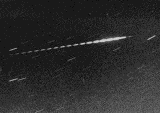

SJAA
Ephemeris
|
SJAA Ephemeris |
Meteor WatchDavid North |
The Lyrid shower peaks on April 21/22, producing 15 meteors per hour on average. Although the Lyrids are considered a major shower, they are really just a very active minor one.
The Lyrids are associated with Comet Thatcher 1861 and have produced several bursts of activity. The most recent such event occurred in 1982 when the ZHR reached 90 meteors per hour.
Begin observations around 11pm, and the shower should peak near 4 am. This year the 1st quarter moon sets around 1 - 2 am.
There will also be some incidental activity from early Eta Aquarids: the outbound (post-perihelion) particles of Halley's comet. This shower is active from mid-April through the end of May with most activity occuring May 3 through May 10.
|  |
| David North; last updated: February 05, 2002 | Prev Next |